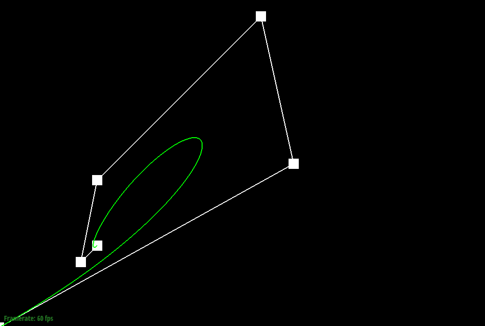

Overview
Give a high-level overview of what you implemented in this project. Think about what you've built as a whole. Share your thoughts on what interesting things you've learned from completing the project.
Section I: Bezier Curves and Surfaces
Part 1: Bezier curves with 1D de Casteljau subdivision
de Casteljau's algorithm is an algorithm used to evaluate Bezier Curve. The algorithm is evaluated as follow: Given n ordered control points, pick t <- [0,1] to perform linear interpolation of each pair of two consecutive points, resulting with n - 1 control points. The algorithm repeats until there is a single point. The whole curve can be evaluated when all values of t are interpolated. In my implementation, I create a for-loop to loop over n - 1 times to perform linear interpolation.
|
|
|
|
|
|
|
|
|

|
|
Part 2: Bezier surfaces with separable 1D de Casteljau subdivision
For Bezier surfaces, we can reuse the de Casteljau's algorithm to evaluate. Similar to Bezier curve, we have to pick t to perform linear interpolation. Instead of performing the interpolation with n control points, we perform it over n x n controls points as each row has n control points, and we want to perform part one on all the rows. After that, we can use the calculated n control points to perform the last interpolation just like part one. Exactly like part one, we have to interpolate all values of t to get the smooth curve. In my implementation, the function evaluate() takes u and v as inputs (the t in x and y axis in the n x n grid) and iteratively calls the function evaluate1D() with u as t to calculate the final point of each row of controlPoints. After each iteration, the final point will be store in the result vector for the last interpolation for v. Once it is finished, evaluate1D() is evaluated one last time to get the final point with v as t.
Section II: Sampling
Part 3: Average normals for half-edge meshes
Area-weighted vertex normal is important in creating realistic lighting in computer graphics as it will be used to interpolate the normal vectors across the triangle for shader programs to calculate realistic lighting effect such as specular or reflective lights. The idea behind is to use the normals of the neighboring faces to calculate the normal for the vertex. Since the cross product of two vectors is equivalent to finding the area of the parallelogram, it is already area-weighted. In my implementation, it iterates each connected halfedge of the vertex and uses that halfedge and the next halfedge to calculate the cross product. Since the halfedge data structure is not Vector3D, the vectors are created by subtracting the given vertex from the end point of the halfedge (ptr->next()->vertex()->position) and from the endpoint of the next halfedge (ptr->next()->twin()->vertex()->position). The cross product is then added to a result vector which will be normalized as the return value.
Part 4: Half-edge flip
In order to implement edge flip operation, we have to make sure there is no element added or deleted in the process. First, I change the halfedges pointed by the vertices and faces according to the new geometry. Specifically, the vertices shared by the splitting edge have to reassign the halfedges to other connected halfedges because there is no guarantee that the halfedge of the vertex would not be the splitting halfedge. The same logic applies to the face data structure. After that, I change the next, face, and vertex data structures of each halfedge to adjust the correct geometry. Finally, I just return the original input as return statement as everything is changed as pointers. An important debugging tricks I have used is to naively write out all components with the modified geometry and remove one by one to speed up and ensure the integrity.


Part 5: Half-edge split
In order to implement edge split operation, we have to make sure there are one new vertex, two new faces, three new edges (isNew of the new edges is initialized to be true), and six new halfedges. Similar to edge flip, we have to make sure the faces, edges, vertices are pointing to the correct halfedges as there is no guarantee that the modified halfedges are not the halfedges pointed by them. Then I change the next, face, twin, and vertex data structures of each halfedge to adjust the correct geometry. Finally, I assign the new splitting vertex's position to the midpoint of the original vertices shared by the splitted edge and return the new splitting vertex.
Part 6: Loop subdivision for mesh upsampling
In order to implement loop subdivision, I first iterate the vertices to calculate the new positions of the vertices after upsampling using the update rules, assign the new position value to newPosition, and set isNew of the vertices to false. Then I iterate the edges to calculate the new position of the vertex after that edge is splitted, assign it to newPosition and set isNew to false. After that, I iterate the edges again to split all old edges and set the newPosition of the new vertex to be the precomputed value and set the vertices to be new. Then, I iterate the edges again to check if that is shared by an old vertex and a new vertex. If so, flips that edge. Finally, I iterate the vertices to update the position to be the precomputed values.
One interesting thing I have observed after loop subdivision is the sharp corners and edges have very small triangles surrounded, and I think those triangles might be a waste of resources. I think the small triangles can be reduced by mesh simplification/collapse. In addition, the sharp corners are often extraordinary vertices, and they are unavoidable in triangle meshes according to Euler's Formula.
As we can see from above, the cube becomes slightly asymmetric as we further perform loop subdivision. I think it is because of the necessary extraordinary vertex in the mesh. The existence of this point modifies the shape slightly by slightly pushing the triangles around the vertex. Lastly, I don't think I can pre-process the cube with edge flips and splits such that the cube subdivides symmetrically because there is always an extraordinary point.
Section III: Shaders
Part 7: Fun with shaders
Section IV: Mesh Competition
If you are not participating in the optional mesh competition, don't worry about this section!